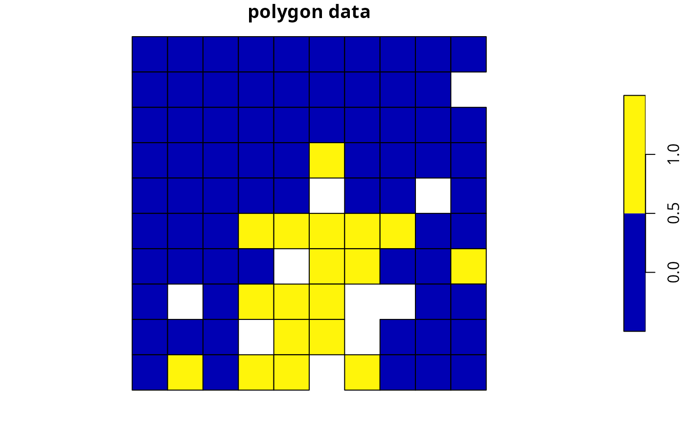
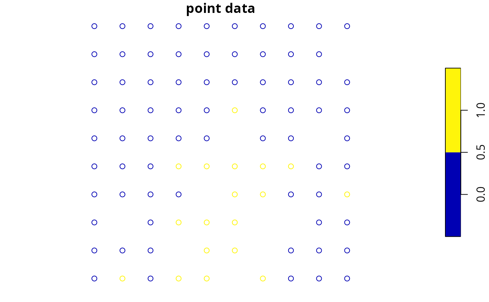

Create a systematic conservation planning problem. This function is used to
specify the basic data used in a spatial prioritization problem: the
spatial distribution of the planning units and their costs, as well as
the features (e.g. species, ecosystems) that need to be conserved. After
constructing this ConservationProblem-class object, it can be
customized to meet specific goals using objectives,
targets, constraints, and
penalties. After building the problem, the
solve function can be used to identify solutions.
# S4 method for Raster,Raster problem(x, features, run_checks, ...) # S4 method for Raster,ZonesRaster problem(x, features, run_checks, ...) # S4 method for Spatial,Raster problem(x, features, cost_column, run_checks, ...) # S4 method for Spatial,ZonesRaster problem(x, features, cost_column, run_checks, ...) # S4 method for Spatial,character problem(x, features, cost_column, ...) # S4 method for Spatial,ZonesCharacter problem(x, features, cost_column, ...) # S4 method for data.frame,character problem(x, features, cost_column, ...) # S4 method for data.frame,ZonesCharacter problem(x, features, cost_column, ...) # S4 method for data.frame,data.frame problem(x, features, rij, cost_column, zones, ...) # S4 method for numeric,data.frame problem(x, features, rij_matrix, ...) # S4 method for matrix,data.frame problem(x, features, rij_matrix, ...)
Arguments
| x |
|
|---|---|
| features | The correct argument for
|
| cost_column |
|
| rij |
|
| rij_matrix |
|
| zones |
|
| run_checks |
|
| ... | not used. |
Value
A ConservationProblem-class object containing the
basic data used to build a prioritization problem.
Details
A reserve design exercise starts by dividing the study region
into planning units (typically square or hexagonal cells) and, for
each planning unit, assigning values that quantify socioeconomic
cost and conservation benefit for a set of conservation features. The
cost can be the acquisition cost of the land, the cost of management,
the opportunity cost of foregone commercial activities (e.g. from logging
or agriculture), or simply the area. The conservation features are
typically species (e.g. Clouded Leopard) or habitats (e.g. mangroves or
cloud forest). The benefit that each feature derives from a planning unit
can take a variety of forms, but is typically either occupancy (i.e.
presence or absence) or area of occurrence within each planning unit.
Finally, in some types of reserve design models, representation targets
must be set for each conservation feature, such as 20
extent of cloud forest or 10,000 km^2 of Clouded Leopard habitat
(see targets).
The goal of the reserve design exercise is then to optimize the trade-off
between conservation benefit and socioeconomic cost, i.e. to get the most
benefit for your limited conservation funds. In general, the goal of an
optimization problem is to minimize an objective function over a set of
decision variables, subject to a series of constraints. The decision
variables are what we control, usually there is one binary variable for
each planning unit specifying whether or not to protect that unit (but
other approaches are available, see decisions). The
constraints can be thought of as rules that need to be followed, for
example, that the reserve must stay within a certain budget or meet the
representation targets.
Integer linear programming (ILP) is the subset of optimization algorithms used in this package to solve reserve design problems. The general form of an integer programming problem can be expressed in matrix notation using the following equation.
$$\mathit{Minimize} \space \mathbf{c}^{\mathbf{T}}\mathbf{x} \space \mathit{subject \space to} \space \mathbf{Ax}\geq= or\leq \mathbf{b}$$
Here, x is a vector of decision variables, c and b are vectors of known coefficients, and A is the constraint matrix. The final term specifies a series of structural constraints where relational operators for the constraint can be either \(\ge, =, or \le\) the coefficients. For example, in the minimum set cover problem, c would be a vector of costs for each planning unit, b a vector of targets for each conservation feature, the relational operator would be \(\ge\) for all features, and A would be the representation matrix with \(A_{ij}=r_{ij}\), the representation level of feature i in planning unit j.
Please note that this function internally computes the amount of each
feature in each planning unit when this data is not supplied (using the
rij_matrix parameter). As a consequence, it can take a while to
initialize large-scale conservation planning problems that involve
millions of planning units.
See also
Examples
# load data data(sim_pu_raster, sim_pu_polygons, sim_pu_lines, sim_pu_points, sim_features) # create problem using raster planning unit data p1 <- problem(sim_pu_raster, sim_features) %>% add_min_set_objective() %>% add_relative_targets(0.2) %>% add_binary_decisions() # create problem using polygon planning unit data p2 <- problem(sim_pu_polygons, sim_features, "cost") %>% add_min_set_objective() %>% add_relative_targets(0.2) %>% add_binary_decisions() # create problem using line planning unit data p3 <- problem(sim_pu_lines, sim_features, "cost") %>% add_min_set_objective() %>% add_relative_targets(0.2) %>% add_binary_decisions() # create problem using point planning unit data p4 <- problem(sim_pu_points, sim_features, "cost") %>% add_min_set_objective() %>% add_relative_targets(0.2) %>% add_binary_decisions() # add columns to polygon planning unit data representing the abundance # of species inside them sim_pu_polygons$spp_1 <- rpois(length(sim_pu_polygons), 5) sim_pu_polygons$spp_2 <- rpois(length(sim_pu_polygons), 8) sim_pu_polygons$spp_3 <- rpois(length(sim_pu_polygons), 2) # create problem using pre-processed data when feature abundances are # stored in the columns of an attribute table for a spatial vector data set p5 <- problem(sim_pu_polygons, features = c("spp_1", "spp_2", "spp_3"), "cost") %>% add_min_set_objective() %>% add_relative_targets(0.2) %>% add_binary_decisions() # alternatively one can supply pre-processed aspatial data costs <- sim_pu_polygons$cost features <- data.frame(id = seq_len(nlayers(sim_features)), name = names(sim_features)) rij_mat <- rij_matrix(sim_pu_polygons, sim_features) p6 <- problem(costs, features, rij_matrix = rij_mat) %>% add_min_set_objective() %>% add_relative_targets(0.2) %>% add_binary_decisions()#> Optimize a model with 5 rows, 90 columns and 450 nonzeros #> Variable types: 0 continuous, 90 integer (90 binary) #> Coefficient statistics: #> Matrix range [2e-01, 9e-01] #> Objective range [2e+02, 2e+02] #> Bounds range [1e+00, 1e+00] #> RHS range [6e+00, 2e+01] #> Found heuristic solution: objective 4544.4850483 #> Presolve time: 0.00s #> Presolved: 5 rows, 90 columns, 450 nonzeros #> Variable types: 0 continuous, 90 integer (90 binary) #> Presolved: 5 rows, 90 columns, 450 nonzeros #> #> #> Root relaxation: objective 3.899056e+03, 12 iterations, 0.00 seconds #> #> Nodes | Current Node | Objective Bounds | Work #> Expl Unexpl | Obj Depth IntInf | Incumbent BestBd Gap | It/Node Time #> #> 0 0 3899.05601 0 4 4544.48505 3899.05601 14.2% - 0s #> H 0 0 3994.8945897 3899.05601 2.40% - 0s #> #> Explored 1 nodes (12 simplex iterations) in 0.00 seconds #> Thread count was 1 (of 4 available processors) #> #> Solution count 2: 3994.89 4544.49 #> #> Optimal solution found (tolerance 1.00e-01) #> Best objective 3.994894589653e+03, best bound 3.899056011987e+03, gap 2.3990%#> Optimize a model with 5 rows, 90 columns and 450 nonzeros #> Variable types: 0 continuous, 90 integer (90 binary) #> Coefficient statistics: #> Matrix range [2e-01, 9e-01] #> Objective range [2e+02, 2e+02] #> Bounds range [1e+00, 1e+00] #> RHS range [6e+00, 1e+01] #> Found heuristic solution: objective 3934.6218396 #> Presolve time: 0.00s #> Presolved: 5 rows, 90 columns, 450 nonzeros #> Variable types: 0 continuous, 90 integer (90 binary) #> Presolved: 5 rows, 90 columns, 450 nonzeros #> #> #> Root relaxation: objective 3.496032e+03, 16 iterations, 0.00 seconds #> #> Nodes | Current Node | Objective Bounds | Work #> Expl Unexpl | Obj Depth IntInf | Incumbent BestBd Gap | It/Node Time #> #> 0 0 3496.03193 0 4 3934.62184 3496.03193 11.1% - 0s #> H 0 0 3585.9601335 3496.03193 2.51% - 0s #> #> Explored 1 nodes (16 simplex iterations) in 0.00 seconds #> Thread count was 1 (of 4 available processors) #> #> Solution count 2: 3585.96 3934.62 #> #> Optimal solution found (tolerance 1.00e-01) #> Best objective 3.585960133519e+03, best bound 3.496031931890e+03, gap 2.5078%#> Optimize a model with 5 rows, 90 columns and 450 nonzeros #> Variable types: 0 continuous, 90 integer (90 binary) #> Coefficient statistics: #> Matrix range [2e-01, 9e-01] #> Objective range [2e+02, 2e+02] #> Bounds range [1e+00, 1e+00] #> RHS range [6e+00, 2e+01] #> Found heuristic solution: objective 3934.6218396 #> Presolve time: 0.00s #> Presolved: 5 rows, 90 columns, 450 nonzeros #> Variable types: 0 continuous, 90 integer (90 binary) #> Presolved: 5 rows, 90 columns, 450 nonzeros #> #> #> Root relaxation: objective 3.497406e+03, 18 iterations, 0.00 seconds #> #> Nodes | Current Node | Objective Bounds | Work #> Expl Unexpl | Obj Depth IntInf | Incumbent BestBd Gap | It/Node Time #> #> 0 0 3497.40640 0 4 3934.62184 3497.40640 11.1% - 0s #> H 0 0 3589.0622676 3497.40640 2.55% - 0s #> #> Explored 1 nodes (18 simplex iterations) in 0.00 seconds #> Thread count was 1 (of 4 available processors) #> #> Solution count 2: 3589.06 3934.62 #> #> Optimal solution found (tolerance 1.00e-01) #> Best objective 3.589062267616e+03, best bound 3.497406397077e+03, gap 2.5538%#> Optimize a model with 5 rows, 90 columns and 450 nonzeros #> Variable types: 0 continuous, 90 integer (90 binary) #> Coefficient statistics: #> Matrix range [2e-01, 9e-01] #> Objective range [2e+02, 2e+02] #> Bounds range [1e+00, 1e+00] #> RHS range [6e+00, 1e+01] #> Found heuristic solution: objective 3934.6218396 #> Presolve time: 0.00s #> Presolved: 5 rows, 90 columns, 450 nonzeros #> Variable types: 0 continuous, 90 integer (90 binary) #> Presolved: 5 rows, 90 columns, 450 nonzeros #> #> #> Root relaxation: objective 3.496032e+03, 16 iterations, 0.00 seconds #> #> Nodes | Current Node | Objective Bounds | Work #> Expl Unexpl | Obj Depth IntInf | Incumbent BestBd Gap | It/Node Time #> #> 0 0 3496.03193 0 4 3934.62184 3496.03193 11.1% - 0s #> H 0 0 3585.9601335 3496.03193 2.51% - 0s #> #> Explored 1 nodes (16 simplex iterations) in 0.00 seconds #> Thread count was 1 (of 4 available processors) #> #> Solution count 2: 3585.96 3934.62 #> #> Optimal solution found (tolerance 1.00e-01) #> Best objective 3.585960133519e+03, best bound 3.496031931890e+03, gap 2.5078%#> Optimize a model with 3 rows, 90 columns and 259 nonzeros #> Variable types: 0 continuous, 90 integer (90 binary) #> Coefficient statistics: #> Matrix range [1e+00, 1e+01] #> Objective range [2e+02, 2e+02] #> Bounds range [1e+00, 1e+00] #> RHS range [4e+01, 1e+02] #> Found heuristic solution: objective 3735.0477670 #> Presolve time: 0.00s #> Presolved: 3 rows, 90 columns, 259 nonzeros #> Variable types: 0 continuous, 90 integer (90 binary) #> Presolved: 3 rows, 90 columns, 259 nonzeros #> #> #> Root relaxation: objective 2.641301e+03, 6 iterations, 0.00 seconds #> #> Nodes | Current Node | Objective Bounds | Work #> Expl Unexpl | Obj Depth IntInf | Incumbent BestBd Gap | It/Node Time #> #> 0 0 2641.30066 0 2 3735.04777 2641.30066 29.3% - 0s #> H 0 0 2680.4719984 2641.30066 1.46% - 0s #> #> Explored 1 nodes (6 simplex iterations) in 0.00 seconds #> Thread count was 1 (of 4 available processors) #> #> Solution count 2: 2680.47 3735.05 #> #> Optimal solution found (tolerance 1.00e-01) #> Best objective 2.680471998357e+03, best bound 2.641300658973e+03, gap 1.4614%#> Optimize a model with 5 rows, 90 columns and 450 nonzeros #> Variable types: 0 continuous, 90 integer (90 binary) #> Coefficient statistics: #> Matrix range [2e-01, 9e-01] #> Objective range [2e+02, 2e+02] #> Bounds range [1e+00, 1e+00] #> RHS range [6e+00, 1e+01] #> Found heuristic solution: objective 3934.6218396 #> Presolve time: 0.00s #> Presolved: 5 rows, 90 columns, 450 nonzeros #> Variable types: 0 continuous, 90 integer (90 binary) #> Presolved: 5 rows, 90 columns, 450 nonzeros #> #> #> Root relaxation: objective 3.496032e+03, 16 iterations, 0.00 seconds #> #> Nodes | Current Node | Objective Bounds | Work #> Expl Unexpl | Obj Depth IntInf | Incumbent BestBd Gap | It/Node Time #> #> 0 0 3496.03193 0 4 3934.62184 3496.03193 11.1% - 0s #> H 0 0 3585.9601335 3496.03193 2.51% - 0s #> #> Explored 1 nodes (16 simplex iterations) in 0.00 seconds #> Thread count was 1 (of 4 available processors) #> #> Solution count 2: 3585.96 3934.62 #> #> Optimal solution found (tolerance 1.00e-01) #> Best objective 3.585960133519e+03, best bound 3.496031931890e+03, gap 2.5078%# plot solutions for problems associated with spatial data par(mfrow = c(3, 2), mar = c(0, 0, 4.1, 0)) plot(s1, main = "raster data", axes = FALSE, box = FALSE) plot(s2, main = "polygon data") plot(s2[s2$solution_1 == 1, ], col = "darkgreen", add = TRUE) plot(s3, main = "line data") lines(s3[s3$solution_1 == 1, ], col = "darkgreen", lwd = 2) plot(s4, main = "point data", pch = 19) points(s4[s4$solution_1 == 1, ], col = "darkgreen", cex = 2, pch = 19) plot(s5, main = "preprocessed data", pch = 19) plot(s5[s5$solution_1 == 1, ], col = "darkgreen", add = TRUE) # show solutions for problems associated with aspatial data str(s6)#> num [1:90] 0 0 0 0 0 0 0 0 0 1 ... #> - attr(*, "objective")= Named num 3586 #> ..- attr(*, "names")= chr "solution_1" #> - attr(*, "status")= Named chr "OPTIMAL" #> ..- attr(*, "names")= chr "solution_1" #> - attr(*, "runtime")= Named num 0.00253 #> ..- attr(*, "names")= chr "solution_1"# create some problems with multiple zones # first, create a matrix containing the targets for multi-zone problems # here each row corresponds to a different feature, each # column corresponds to a different zone, and values correspond # to the total (absolute) amount of a given feature that needs to be secured # in a given zone targets <- matrix(rpois(15, 1), nrow = number_of_features(sim_features_zones), ncol = number_of_zones(sim_features_zones), dimnames = list(feature_names(sim_features_zones), zone_names(sim_features_zones))) # print targets print(targets)#> zone_1 zone_2 zone_3 #> feature_1 2 0 0 #> feature_2 1 0 2 #> feature_3 1 0 2 #> feature_4 2 2 3 #> feature_5 1 0 0# create a multi-zone problem with raster data p6 <- problem(sim_pu_zones_stack, sim_features_zones) %>% add_min_set_objective() %>% add_absolute_targets(targets) %>% add_binary_decisions()#> Optimize a model with 105 rows, 270 columns and 1620 nonzeros #> Variable types: 0 continuous, 270 integer (270 binary) #> Coefficient statistics: #> Matrix range [2e-01, 1e+00] #> Objective range [2e+02, 2e+02] #> Bounds range [1e+00, 1e+00] #> RHS range [1e+00, 3e+00] #> Found heuristic solution: objective 3539.4867890 #> Presolve removed 10 rows and 0 columns #> Presolve time: 0.00s #> Presolved: 95 rows, 270 columns, 720 nonzeros #> Variable types: 0 continuous, 270 integer (270 binary) #> Presolved: 95 rows, 270 columns, 720 nonzeros #> #> #> Root relaxation: objective 2.579623e+03, 31 iterations, 0.00 seconds #> #> Nodes | Current Node | Objective Bounds | Work #> Expl Unexpl | Obj Depth IntInf | Incumbent BestBd Gap | It/Node Time #> #> 0 0 2579.62323 0 6 3539.48679 2579.62323 27.1% - 0s #> H 0 0 2904.8181707 2579.62323 11.2% - 0s #> H 0 0 2876.1147130 2579.62323 10.3% - 0s #> 0 0 2699.48558 0 10 2876.11471 2699.48558 6.14% - 0s #> #> Cutting planes: #> Cover: 1 #> StrongCG: 2 #> #> Explored 1 nodes (41 simplex iterations) in 0.01 seconds #> Thread count was 1 (of 4 available processors) #> #> Solution count 3: 2876.11 2904.82 3539.49 #> #> Optimal solution found (tolerance 1.00e-01) #> Best objective 2.876114712968e+03, best bound 2.699485578926e+03, gap 6.1412%# plot solution # here, each layer/panel corresponds to a different zone and pixel values # indicate if a given planning unit has been allocated to a given zone par(mfrow = c(1, 1)) plot(s6, main = c("zone 1", "zone 2", "zone 3"), axes = FALSE, box = FALSE)# alternatively, the category_layer function can be used to create # a new raster object containing the zone ids for each planning unit # in the solution (note this only works for problems with binary decisions) par(mfrow = c(1, 1)) plot(category_layer(s6), axes = FALSE, box = FALSE)# create a multi-zone problem with polygon data p7 <- problem(sim_pu_zones_polygons, sim_features_zones, cost_column = c("cost_1", "cost_2", "cost_3")) %>% add_min_set_objective() %>% add_absolute_targets(targets) %>% add_binary_decisions()#> Optimize a model with 105 rows, 270 columns and 1620 nonzeros #> Variable types: 0 continuous, 270 integer (270 binary) #> Coefficient statistics: #> Matrix range [2e-01, 1e+00] #> Objective range [2e+02, 2e+02] #> Bounds range [1e+00, 1e+00] #> RHS range [1e+00, 3e+00] #> Found heuristic solution: objective 3539.4867890 #> Presolve removed 10 rows and 0 columns #> Presolve time: 0.00s #> Presolved: 95 rows, 270 columns, 720 nonzeros #> Variable types: 0 continuous, 270 integer (270 binary) #> Presolved: 95 rows, 270 columns, 720 nonzeros #> #> #> Root relaxation: objective 2.579623e+03, 31 iterations, 0.00 seconds #> #> Nodes | Current Node | Objective Bounds | Work #> Expl Unexpl | Obj Depth IntInf | Incumbent BestBd Gap | It/Node Time #> #> 0 0 2579.62323 0 6 3539.48679 2579.62323 27.1% - 0s #> H 0 0 2904.8181707 2579.62323 11.2% - 0s #> H 0 0 2876.1147130 2579.62323 10.3% - 0s #> 0 0 2699.48558 0 10 2876.11471 2699.48558 6.14% - 0s #> #> Cutting planes: #> Cover: 1 #> StrongCG: 2 #> #> Explored 1 nodes (41 simplex iterations) in 0.01 seconds #> Thread count was 1 (of 4 available processors) #> #> Solution count 3: 2876.11 2904.82 3539.49 #> #> Optimal solution found (tolerance 1.00e-01) #> Best objective 2.876114712968e+03, best bound 2.699485578926e+03, gap 6.1412%# create column containing the zone id for which each planning unit was # allocated to in the solution s7$solution <- category_vector(s7@data[, c("solution_1_zone_1", "solution_1_zone_2", "solution_1_zone_3")]) s7$solution <- factor(s7$solution) # plot solution spplot(s7, zcol = "solution", main = "solution", axes = FALSE, box = FALSE)# create a multi-zone problem with polygon planning unit data # and where fields (columns) in the attribute table correspond # to feature abundances # first fields need to be added to the planning unit data # which indicate the amount of each feature in each zone # to do this, the fields will be populated with random counts sim_pu_zones_polygons$spp1_z1 <- rpois(nrow(sim_pu_zones_polygons), 1) sim_pu_zones_polygons$spp2_z1 <- rpois(nrow(sim_pu_zones_polygons), 1) sim_pu_zones_polygons$spp3_z1 <- rpois(nrow(sim_pu_zones_polygons), 1) sim_pu_zones_polygons$spp1_z2 <- rpois(nrow(sim_pu_zones_polygons), 1) sim_pu_zones_polygons$spp2_z2 <- rpois(nrow(sim_pu_zones_polygons), 1) sim_pu_zones_polygons$spp3_z2 <- rpois(nrow(sim_pu_zones_polygons), 1) # create problem with polygon planning unit data and use field names # to indicate feature data # additionally, to make this example slightly more interesting, # the problem will have proportion-type decisions such that # a proportion of each planning unit can be allocated to each of the # two management zones p8 <- problem(sim_pu_zones_polygons, zones(c("spp1_z1", "spp2_z1", "spp3_z1"), c("spp1_z2", "spp2_z2", "spp3_z2"), zone_names = c("z1", "z2")), cost_column = c("cost_1", "cost_2")) %>% add_min_set_objective() %>% add_absolute_targets(targets[1:3, 1:2]) %>% add_proportion_decisions()#> Optimize a model with 96 rows, 180 columns and 521 nonzeros #> Coefficient statistics: #> Matrix range [1e+00, 5e+00] #> Objective range [2e+02, 2e+02] #> Bounds range [1e+00, 1e+00] #> RHS range [1e+00, 2e+00] #> Presolve removed 93 rows and 97 columns #> Presolve time: 0.00s #> Presolved: 3 rows, 83 columns, 165 nonzeros #> #> Iteration Objective Primal Inf. Dual Inf. Time #> 0 0.0000000e+00 8.750000e-01 0.000000e+00 0s #> 4 1.4226180e+02 0.000000e+00 0.000000e+00 0s #> #> Solved in 4 iterations and 0.00 seconds #> Optimal objective 1.422617961e+02# plot solution spplot(s8, zcol = c("solution_1_z1", "solution_1_z2"), main = "solution", axes = FALSE, box = FALSE)